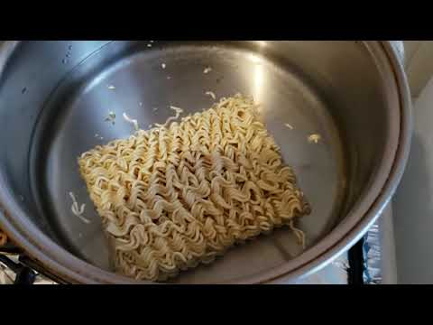

Meu Livro de Receitas
Miojo Básico:

Ingredientes:
- 1 pacote de macarrão instantâneo (miojo)
- Água
- Tempero em pó do pacote de miojo
Instruções:
- Preparando o Miojo:
- Leve uma panela ao fogo e adicione água suficiente para cozinhar o miojo. Geralmente, cerca de 2 xícaras de água são suficientes.
- Quando a água estiver fervendo, adicione o macarrão instantâneo.
- Cozinhando o Miojo:
- Cozinhe o macarrão conforme as instruções da embalagem, que normalmente é de 2-3 minutos. O macarrão instantâneo cozinha rapidamente.
- Adicionando o Tempero:
- Quando o macarrão estiver cozido, desligue o fogo.
- Adicione o tempero em pó que vem com o pacote de miojo. Mexa bem para distribuir o tempero.
- Servindo:
- Transfira o miojo temperado para um prato e sirva imediatamente.